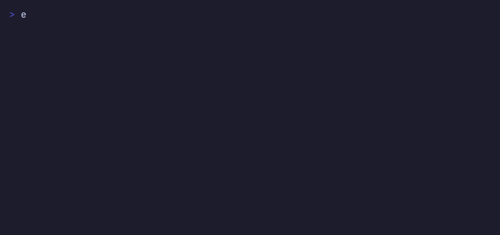

bind a name · jump · group with tags · measure it · hash a file · find what you never named
#two commands, split on purpose
not by what they're called — by what they're allowed to do to you. the split is the whole ergonomic argument.
moves you, and only ever reads your config. safe in a pipeline, safe to hit by reflex.
- sd dots jump to a name
- sd dot a unique prefix
- sd dots/nix into a subdir
- sd - previous dir
- sd ls what can i jump to
- sd top where you actually go
- sd suggest mine your history
- sd sha256 file hash it yourself
changes things, and can never change your directory. it can't cd, because a subprocess can't.
- sdcfg add bind a name
- sdcfg import dir a whole tree
- sdcfg bind name what history shows
- sdcfg tag @desk group aliases
- sdcfg zoxide import from zoxide
- sdcfg doctor check the install
- sdcfg update upgrade, verified
- sdcfg bench measure it here
sd cannot rewrite your aliases and sdcfg cannot change your directory. one is safe in a pipeline, the other is safe to hit by reflex. every flag is long-form too — --force, --dry-run, --keep-symlinks — no short aliases to misremember.
#what it actually feels like
the two things you'll notice in the first minute: a typo doesn't fail flat, and a directory you never named is already remembered.
$ sd dotfile sd: no alias named 'dotfile' did you mean: dotfiles see them all: sd ls
$ sd suggest 2841 history commands from 1 file(s), 24 distinct directories 4 already bound, showing the top 3: 37x /home/you/Projects/simpledir 19x /home/you/.config/hypr 8x /home/you/src/neovim-config bind them all: sdcfg add simpledir /home/you/Projects/simpledir sdcfg add hypr /home/you/.config/hypr
$ sd oldproject sd: /home/you/Projects/oldproject is gone it was bound as oldproject. rebind it: sdcfg add oldproject /the/new/place or drop it: sdcfg rm oldproject
#numbers, not adjectives
there's a measuring stick in the box rather than a number you have to take on trust. sdcfg bench forks the real binary, median of 200 runs, on your machine, right now.
| case | median | over startup | what it's doing |
|---|---|---|---|
| process startup | 0.288 ms | — | any process at all |
| sd <alias> | 0.356 ms | +0.068 ms | the common case: hit a name |
| sd ls | 0.382 ms | +0.094 ms | 6 aliases in the config |
| sdcfg doctor | 0.587 ms | +0.299 ms | every check it can do |
measured on an Arch laptop, 6 aliases, median of 200 runs. yours will differ — that's what the tool is for. note the jump doesn't search the frecency log at all: recording a visit needs one timestamp, found by a substring scan rather than a parse.
#it replaces zoxide
zoxide is a great tool and this is a drop-in replacement: same frecency idea, same "remember a directory I never named" behaviour. it doesn't conflict, so you can run both for a while and compare.
| zoxide | simpledir | |
|---|---|---|
| remembers dirs you never named | frecency-scored | frecency-scored, same half-life idea |
| remembers dirs you named | no | yes — that's the point |
| state to maintain | sqlite db + daemon + shell hooks | two json files |
| config you can read and hand-edit | no | yes |
| your shell history | ignored | mined by sd suggest |
| per-jump cost | sqlite query + daemon round trip | 0.36 ms, measured |
| coming from zoxide | — | sdcfg zoxide imports what it knows |
your aliases are data, not installation — they stay in ~/.simpledir/config.json whether or not the program is still there.
#what it's made of
the short version of every promise this thing makes. each one is a property of the code, not a policy.
one source file
sd.cpp is the whole program — json, config, frecency, both command halves, the sha-256. one g++ invocation, no build system to learn.
statically linked
nothing left to install at runtime. curl is the entire dependency list — it's how downloads happen, since TLS isn't in the C++ stdlib.
no daemon
nothing resident, nothing to start, nothing to hang. it was measured rather than assumed: a socket round trip costs about as much as just parsing the log.
no model, no network on the jump
every feature is arithmetic over data already on this machine — a half-life, a substring match, an edit distance. it never calls out. it works on a plane.
two json files
one you edit, one it doesn't. plain hand-editable json in ~/.simpledir — no database, no migration ceremony, no proprietary format.
645 assertions
the suite drives the compiled binary through the same command line you do, in real bash subprocesses, with no network. it must be green before anything ships.
#the download checks itself
until 11.0, both install paths asked one question of a binary fetched over the network: does it claim to be us? which is a question about what the file says.
==> checksum verified against the published SHA256SUMS ==> got sd 11.0.0 - every download is checked… !! CHECKSUM MISMATCH for sd-linux-x86_64 !! published: 3dac5b53a658… !! downloaded: 1c72c1cf950f… xx does not match the checksum this release published.
- ▸every release ships a SHA256SUMS, and the installer,
sdcfg updateand the PKGBUILD all compare against it before anything is run or replaced. - ▸a wrong checksum is fatal — that's the one case where continuing puts someone else's bytes in your PATH.
- ▸a missing one only warns. old mirrors and offline boxes must not brick an install for reasons that have nothing to do with tampering.
- ▸
sd sha256 <file>lets you check a download without trusting the thing doing the verifying. - ▸no crypto dependency: SHA-256 is forty lines of arithmetic in
sd.cpp, pinned to the published NIST vectors. - ▸the updater also runs what it fetched with
--versionand checks it really is simpledir and really newer, before swapping your binary in. a same-version or garbage download never replaces a working install.
#where everything is
no funnel, no email, no signup. it's a file on the internet and a repository.